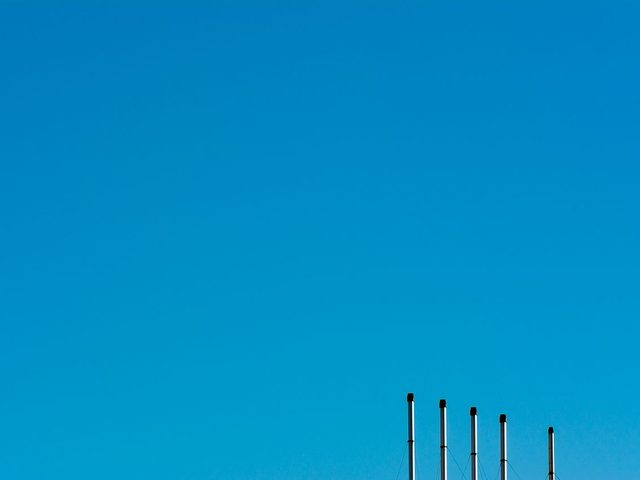
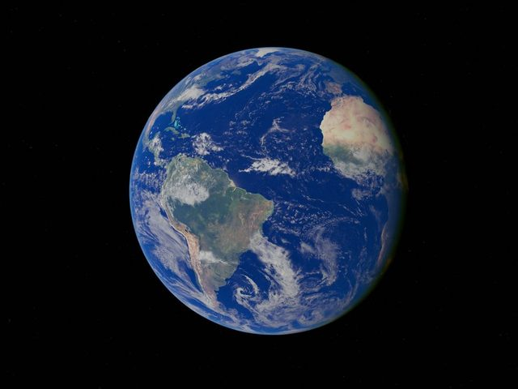
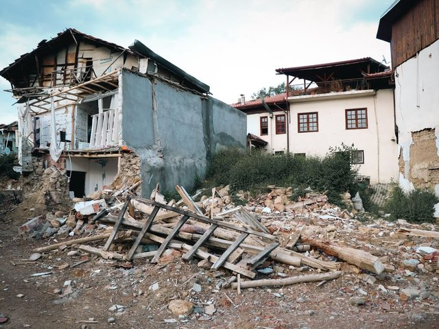
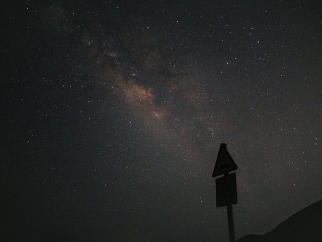

UNIT 24 · VOCABULARY
天氣與大自然
Weather & nature
29 個單字聽・唸・用
本單元單字一覽
說天氣的形容詞、天氣現象，還有天空裡的日月星辰，共 29 個字。很多天氣形容詞是「名詞＋y」：rain → rainy、sun → sunny。
weatherclearcloudycoldcooldryhotrainysnowysunnywarmwetwindyrainbowshowersnowtyphoonwindblowrainshinenaturecloudearthearthquakemoonskysunstar
每個字都有 🔊，先聽發音、跟著唸，再看例句。
單字 1–4

weather
天氣n.
What's the weather like today?
今天天氣怎麼樣？
今天天氣怎麼樣？

clear
晴朗的；清楚的adj.
The sky is clear, so we can see the stars.
天空很晴朗，所以我們看得到星星。
天空很晴朗，所以我們看得到星星。

cloudy
多雲的；陰天的adj.
It's cloudy, but it's not raining.
天氣陰陰的，但沒有下雨。
天氣陰陰的，但沒有下雨。

cold
冷的adj.
It's cold outside. Put on your coat.
外面很冷，穿上外套。
外面很冷，穿上外套。
單字 5–8
cool
涼快的adj.
The weather is cool in autumn.
秋天天氣涼爽。
秋天天氣涼爽。

dry
乾的；乾燥的adj.
The air is very dry in winter.
冬天空氣很乾燥。
冬天空氣很乾燥。

hot
熱的adj.
It's so hot that I want to go swimming.
天氣熱到我想去游泳。
天氣熱到我想去游泳。

rainy
下雨的；多雨的adj.
Don't forget your umbrella on rainy days.
雨天別忘了帶傘。
雨天別忘了帶傘。
單字 9–12

snowy
下雪的；積雪的adj.
It was snowy in Japan when we visited.
我們去日本的時候正在下雪。
我們去日本的時候正在下雪。

sunny
晴朗的；陽光充足的adj.
Let's go on a picnic on a sunny day.
找個晴天去野餐吧。
找個晴天去野餐吧。
warm
溫暖的adj.
Spring is warm and comfortable.
春天溫暖又舒服。
春天溫暖又舒服。

wet
溼的；多雨的adj.
My shoes got wet in the rain.
我的鞋子被雨淋溼了。
我的鞋子被雨淋溼了。
單字 13–16

windy
有風的；風大的adj.
It's too windy to use an umbrella.
風太大了，沒辦法撐傘。
風太大了，沒辦法撐傘。

rainbow
彩虹n.
Look! There's a rainbow after the rain.
你看！雨後有一道彩虹。
你看！雨後有一道彩虹。

shower
陣雨；淋浴n.
There will be some showers this afternoon.
今天下午會有陣雨。
今天下午會有陣雨。

snow
雪；下雪n./v.
The kids made a snowman in the snow.
孩子們在雪地裡堆了一個雪人。
孩子們在雪地裡堆了一個雪人。
單字 17–20

typhoon
颱風n.
School is closed because of the typhoon.
因為颱風，學校停課。
因為颱風，學校停課。
wind
風n.
The wind blew my hat away.
風把我的帽子吹走了。
風把我的帽子吹走了。

blow
吹v.
The wind is blowing hard tonight.
今晚風吹得很大。
今晚風吹得很大。

rain
雨；下雨n./v.
It started to rain when we left school.
我們離開學校時開始下雨了。
我們離開學校時開始下雨了。
單字 21–24
shine
照耀；發光v.
The sun is shining after the storm.
暴風雨過後陽光照耀。
暴風雨過後陽光照耀。
nature
大自然n.
We should protect nature.
我們應該保護大自然。
我們應該保護大自然。
cloud
雲n.
The clouds look like cotton candy.
那些雲看起來像棉花糖。
那些雲看起來像棉花糖。

earth
地球；土地n.
The Earth goes around the sun.
地球繞著太陽轉。
地球繞著太陽轉。
單字 25–28

earthquake
地震n.
The house shook during the earthquake.
地震時房子在搖晃。
地震時房子在搖晃。

moon
月亮n.
The moon is full and bright tonight.
今晚的月亮又圓又亮。
今晚的月亮又圓又亮。
sky
天空n.
Birds are flying in the sky.
鳥在天空飛。
鳥在天空飛。

sun
太陽n.
The sun rises in the east.
太陽從東邊升起。
太陽從東邊升起。
單字 29–29

star
星星n.
We counted the stars in the night sky.
我們數著夜空裡的星星。
我們數著夜空裡的星星。
名詞＋y → 天氣形容詞
| 名詞 | 形容詞 | 例句 |
|---|---|---|
| rain 雨 | rainy 下雨的 | It's rainy today. |
| snow 雪 | snowy 下雪的 | It's snowy in Hokkaido. |
| wind 風 | windy 風大的 | It's windy at the beach. |
| cloud 雲 | cloudy 多雲的 | It's cloudy this morning. |
| sun 太陽 | sunny 晴朗的 | It's sunny. 注意多一個 n |
說天氣用 It：It is sunny. / It is raining.（正在下雨）
問天氣、說天氣
| 英文 | 中文 |
|---|---|
| How's the weather today? | 今天天氣如何？ |
| What's the weather like in Taipei? | 臺北天氣怎麼樣？ |
| It's hot and wet in summer. | 夏天又熱又潮溼。 |
| It's going to rain tomorrow. | 明天會下雨。 |
| A typhoon is coming. | 颱風要來了。 |
weather 不可數：nice weather（不是 a nice weather）。
相反詞與動詞三態
| 字 | 相反／三態 |
|---|---|
| hot ↔ cold | warm ↔ cool |
| dry ↔ wet | sunny ↔ cloudy |
| blow | blow → blew → blown |
| shine（照耀） | shine → shone → shone |
| rain／snow | rained／snowed（規則變化） |
the sun、the moon、the Earth、the sky 前面通常加 the（只有一個）。
快問快答：中文 → 英文
1天氣weather
2晴朗的；清楚的clear
3多雲的；陰天的cloudy
4冷的cold
5涼快的cool
6乾的；乾燥的dry
7熱的hot
8下雨的；多雨的rainy
快問快答：英文 → 中文
1snowy下雪的；積雪的
2sunny晴朗的；陽光充足的
3warm溫暖的
4wet溼的；多雨的
5windy有風的；風大的
6rainbow彩虹
7shower陣雨；淋浴
8snow雪；下雪
學完了！接下來
複習方法
review
- 回到「📗 單字卡」，按「遮中文」自己考自己
- 再按「遮英文」，看中文說出英文
- 每個例句跟著 🔊 唸一次
準備好了
- 按右上角「📝 前往測驗」
- 測驗錯的題目要訂正到全對
- 訂正完成補送 1 點